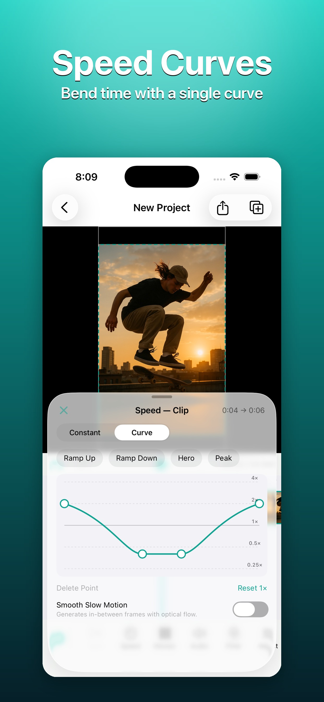
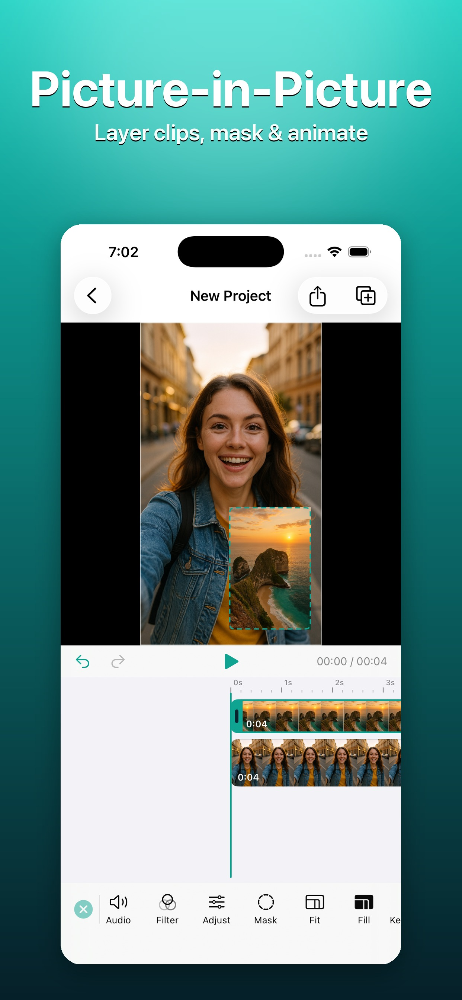
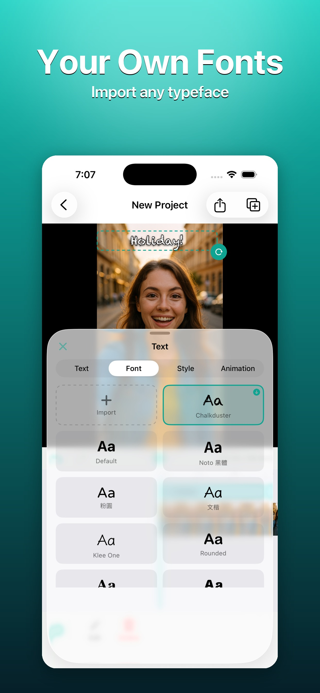
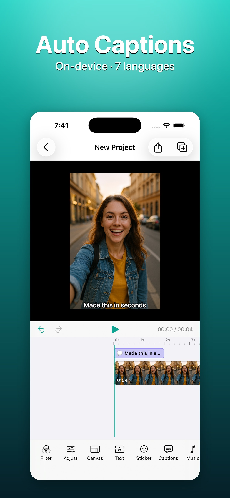
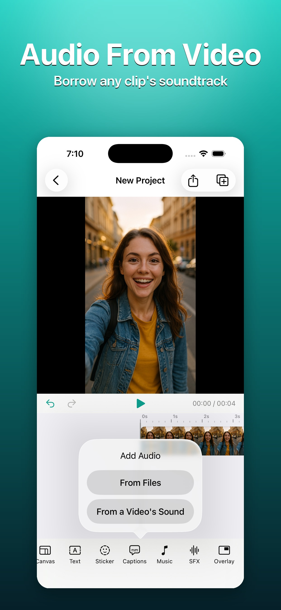
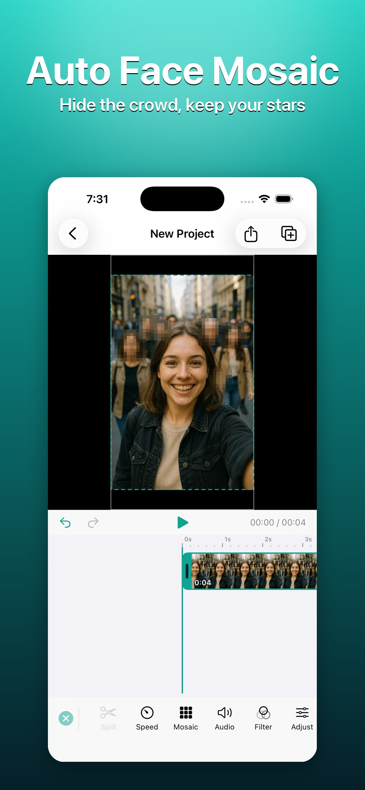

亮點
招牌變速曲線、子母畫面、自訂字型、自動字幕、擷取聲音、人臉馬賽克。






點任一張圖可放大看
完整功能
從剪輯、調色到字幕與隱私遮蔽，全部在裝置端完成。
自動偵測並逐格追蹤人臉，打馬賽克或高斯模糊；可點選保留一位主角不被遮蔽。形狀支援方形／橢圓。
招牌功能：平滑曲線 + 光流補格慢動作，等速 0.25×–4×，多組預設曲線。
裝置端轉錄（繁中・簡中・英・日・韓・西・德），依停頓自動斷句；可手動修正、分割、合併、微調時間。
自由拖曳定位、雙指縮放、雙指旋轉；8 色色盤、圓角底塊、10 種內建字體（含 4 套 CJK）＋可匯入自訂字型、進出場動畫、Emoji 分類網格。
10 組免費電影級 LUT＋強度滑桿，亮度／對比／飽和／色溫；可套單一片段或全部。
剪接點上的接點按鈕：溶接／黑場／推（上下左右）／滑動（上下左右）／縮放，0.2–1.5 秒，A/B 雙軌即時預覽。
位置／縮放／透明度動畫，於播放點加入關鍵影格快照，線性插值，可跳轉／刪除。
影片或照片疊在主畫面上、自帶聲音進混音；拖曳縮放、方形／圓形遮罩，可與關鍵影格／轉場組合。
影片／覆疊／音樂／字幕／貼圖／文字各自獨立軌；雙指縮放、雙向裁剪吸附、長按拖移、完整復原／重做。
相簿多選匯入（保序）、檔案 App 匯入音樂並自動裁切、從影片擷取聲音、獨立音效軌；專案以檔案套件儲存。
9:16／1:1／16:9，黑／白／模糊背景；多平台安全區參考線（Reels／TikTok／Shorts，字幕自動避讓）；4K／1080p／720p 匯出。
繁體中文、簡體中文、英文、日文、韓文、西班牙文，App 內即時切換；含 4 套商用授權 CJK 字型。